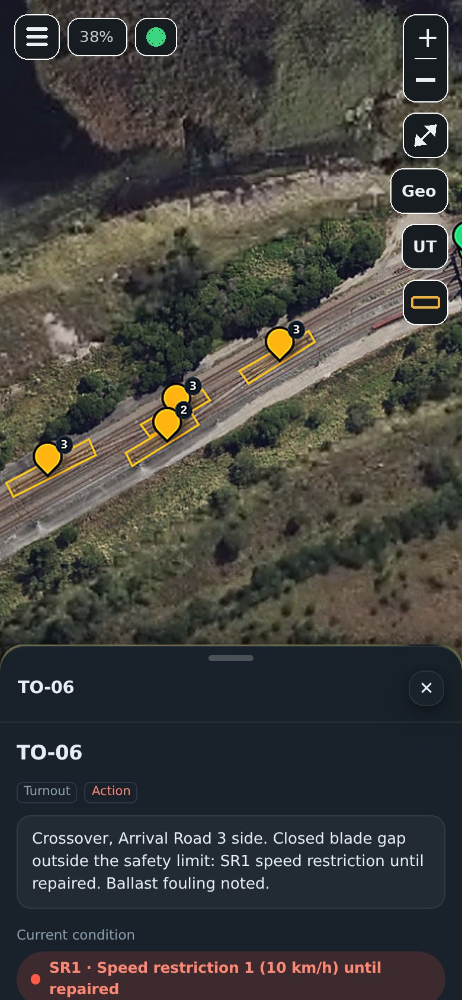

Track inspection · Interactive rail maps
Every metre of track.
On one map.
We inspect your rail loop, yard or siding, then build you your own interactive inspection map. Every turnout, every reading, every photo. On desktop and phone.

Built on a working export terminal rail loop.
Developed and proven on a live coal terminal loop, with forms, codes and tolerances that read the way track people think.
Everything about your track.
In one place.

Your whole site.
In your pocket.
The same map on every phone on your team, with your logo on it.
From site visit to live map.
Site survey
We work under your access and permit process and capture aerial imagery of your site.
Measure and photograph
A qualified track inspector inspects turnouts, takes readings along the track, and photographs every check.
Your map goes live
Your private map, with every asset, reading, photo and report on it, and logins for your team.
Every 91 days
We come back for scheduled inspections. Results go straight onto your map.
Specialist testing, when you need it.
Quoted separately. Results go onto your map alongside your inspections.
Ultrasonic rail testing
Finds internal rail defects before they reach the surface. Every indication is marked on your map at its chainage and rail.
Track geometry recording
Gauge, line and top measured along your track, with findings drawn over the map so you can see where to tamp or verify.
Made for track you own.
Coal and bulk export terminals · Port rail loops · Mine sidings and balloon loops · Shunting and marshalling yards · Grain terminals · Industrial and private sidings
See it on a demo yard.
Then on yours.
Quotes are free and done remotely. Tell us where your site is and a little about it, and we'll work out the rest from aerial imagery.
Cancel any time. Keep your map. No lock-in contracts.